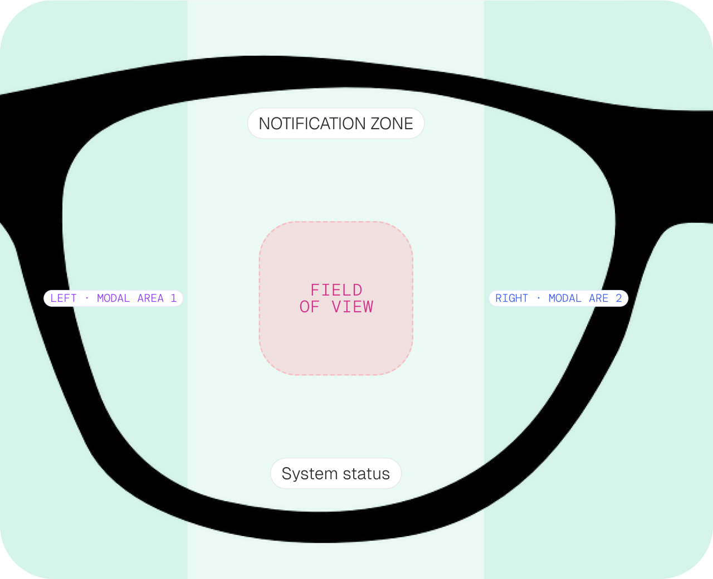
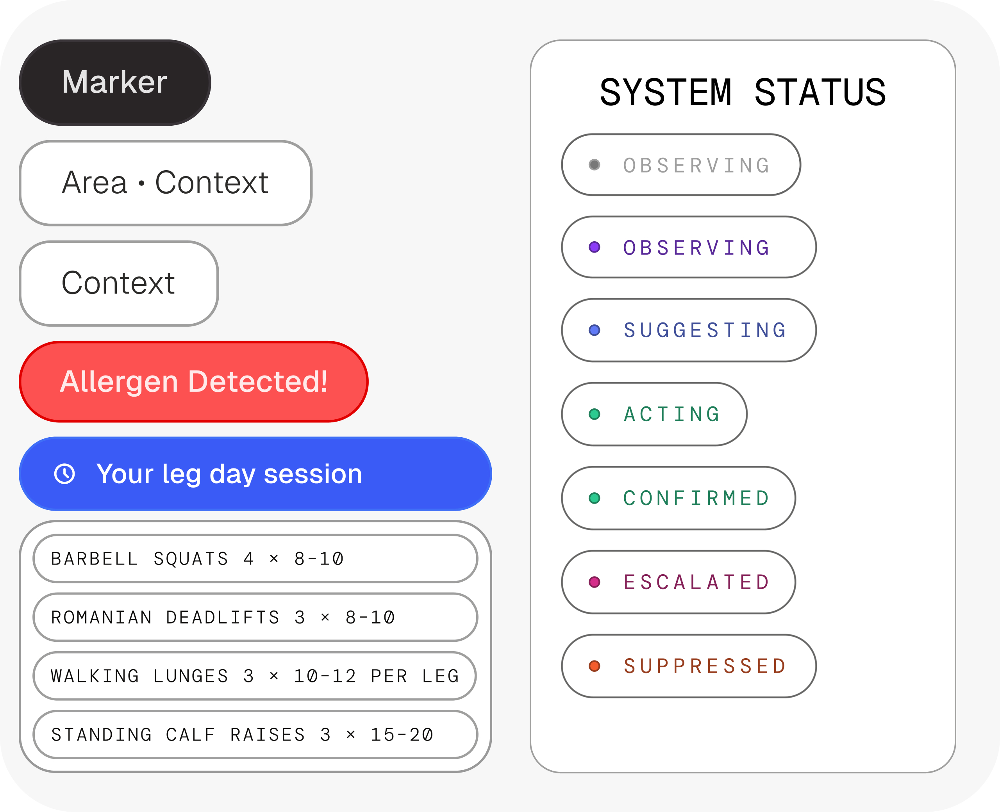
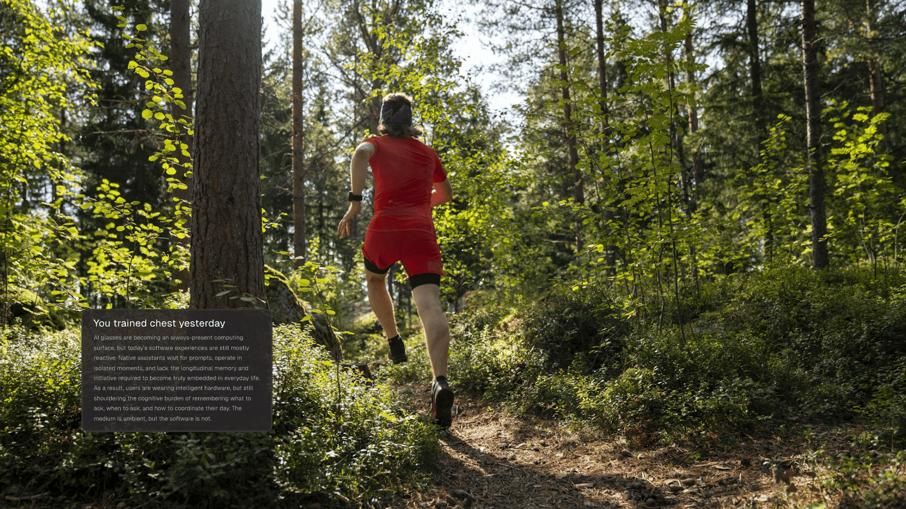

Iris
Creating wearable intelligence in 24 hours
Iris was built at the Parsons x University of Arizona 24-hour AI Hackathon, hosted by Designpreneurs. The question on the table: what does technology look like in 2036? We explored how AI and wearables could shape the way intelligence fits into our lives — and Iris was the answer we came up with.
Iris — 2026
Problem Space
We began by auditing current AI tools and understanding the wearables space:
- Current AI tools are largely reactive, make you go to them relying on prompting and do not understand the full context of the issues you want them to solve.
- Users rely on multiple tools to solve a singular problem; as Apps often only solve one problem at a time.
- Wearables get AI out of the screen and into the world, which is exciting — but they're still running on shallow intelligence and interfaces that aren't there yet. The form factor is solved. The thinking layer isn't.
Solution
We imagined something different — Iris. An agentic AI platform for smart glasses that doesn't wait for a prompt. It learns how you live, reads the moment, and shows up before you ask. Not a chatbot on your face — a discrete personal agent that builds context over time, asks the right questions, and shapes itself around you.
Because your phone isn't always in your hand — but your eyes are always open. Smart glasses give AI continuous access to what you're seeing, without pulling you out of the moment. No tapping, no waking a screen. Just presence.
Living With Iris
To make this real, we followed one person through their day.
He's at the airport — moving fast, already mentally checked out. Iris finds the gate and clocks the timing before he even thinks to look. When he lands, it steers him straight to the right baggage carousel. No searching, no friction. Just the next step, right when he needs it.
At the gym, Iris shifts with him. It tracks his reps, sets, and progress in real time — and when he's ready for the next movement, it points him to the right machine. No app to open, no screen to check. Iris just keeps up.
The Design System
The hardest design problem we faced: how do you design something that isn't meant to be noticed?
Iris organizes information into distinct visual zones — urgency and relevance determine what appears and where, while the center stays completely clear. Your vision stays yours.
The design system itself is intentionally stripped back. Simple shapes, bold colors, signal-based elements. Enough to communicate, never enough to crowd.
And because the real world doesn't have a controlled background, Iris reads it. It analyzes what's in your field of view and dynamically adjusts opacity and contrast on the fly — so whatever it shows you, you can always see it clearly.



Impact
Iris is a bet on intentional design — and on a shift that's already underway. Moving from reactive, chat-based AI to something longitudinal, something that lives with you, is the next big category of intelligent interfaces. We built Iris to help define what that looks like.
Reflection
Strong vision beats strong visuals. The best ideas we had didn't come from refining the interface — they came from stepping back and questioning the whole model. That's the lesson we're taking forward.
Outcome
Iris took first place at the AI & Startup Design Hackathon hosted by Designpreneurs — a 24-hour sprint bringing together students from Parsons School of Design and the University of Arizona. What started as a single question about the future became a product we're genuinely proud of.
Special thanks to my team!